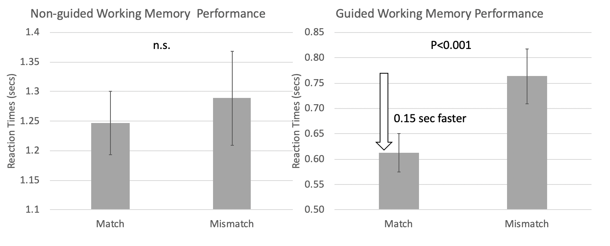

Optimizing task performance by tapping into our predictive minds!
Given the interesting finding of faster reaction times on identifying a “match” than a “mismatch” letter in the previous study, I was interested in whether such advantage is the result of the task’s guided feature, which allows participants to predict what’s the next letter in line. I designed a new task with the same task requirement, but without the guided feature. I compared the reaction times from the guided task to the non-guided task.
What did we find?...
The reaction time difference between “match” and “mismatch” disappeared when the guided feature was taken away. With guiding, participants were on average 150 msecs faster on match trials than mismatch trials. Without guiding, their performed about the same on both types of trials.

What did we learn from these results?...
Sometimes a simple tweak in the task design can make tremendous difference in how efficiently we process stimuli. In this case, the guiding feature allows the participant to make predictions which greatly enhances task performance.
Learn more about the guided task design: SFN2019.poster
See the next Research Project Go back to the Main Page
>